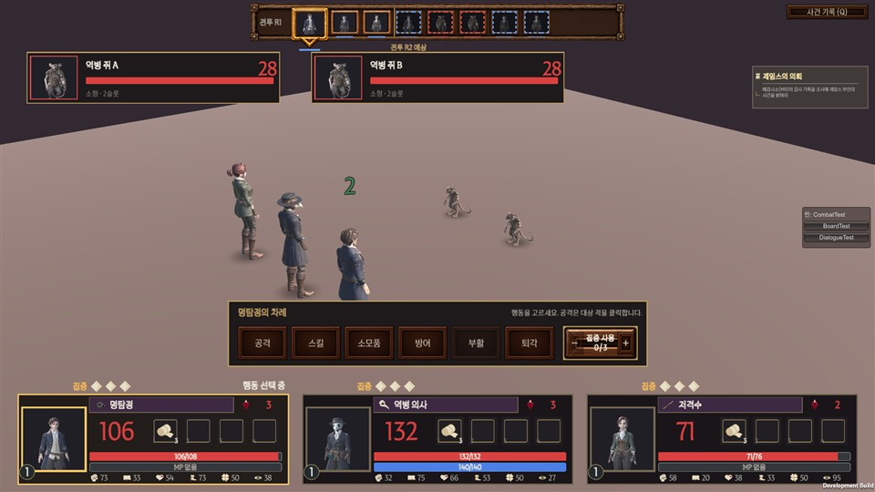
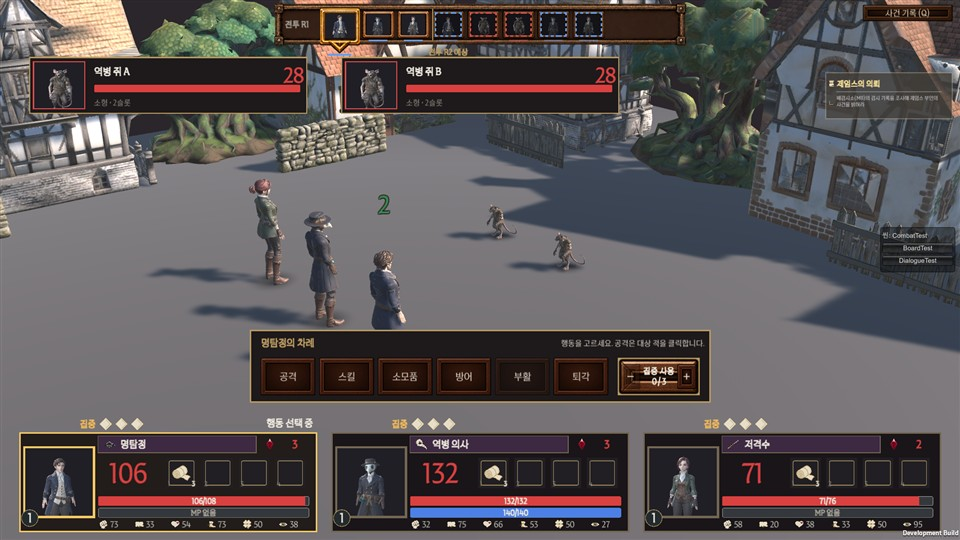
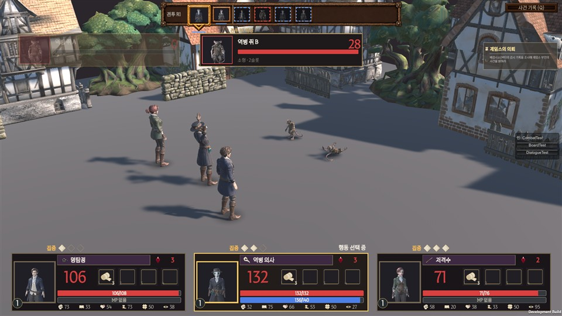
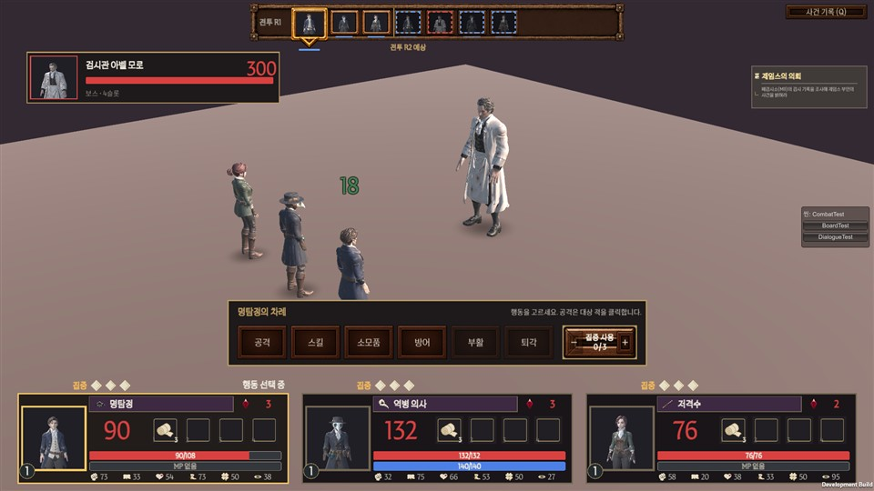
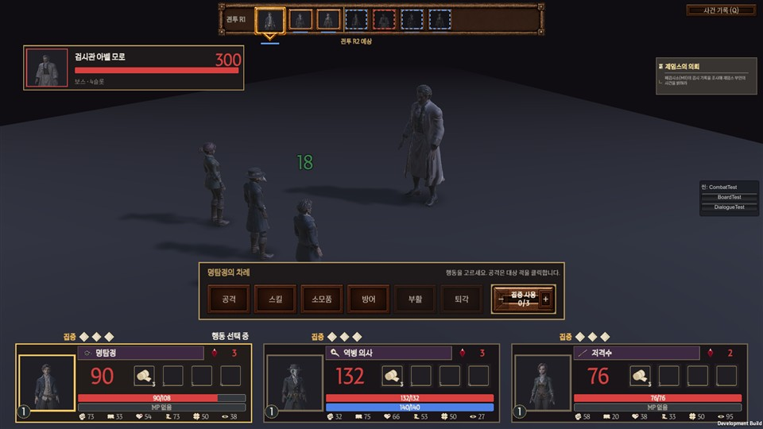

기획 회신 02대로 두 가지를 먼저 만들어 봤습니다. 11/15 검수 때 넣을지 뺄지만 정해 주세요. 빼면 예전 화면으로 바로 돌아갑니다.



| 쓴 것 | 이미 받은 모델만 — 집 3종(A·B·C) · 나무 2종 · 돌담 · 울타리 · 돌 아치. 3D 새 작업 없음 |
|---|---|
| 놓은 곳 | 적 뒤 한 줄 + 먼 쪽 한 줄 (카메라 반대편). 싸우는 자리에는 아무것도 없음 |
| 바닥 | 흙빛 → 어두운 돌길 색 (색만 바꿈) |
| 먼 곳 | 옅은 안개로 바탕색에 녹임 |
| 적용 범위 | 아벨 모로전을 뺀 모든 전투 (일반 적 · 사신) |


기획 회신 02대로 보스전은 전용 배경 없이 조명만 바꿨습니다. 시체 안치소 바닥 모델(11/5 요청)이 오지 않아 바닥은 그대로입니다.
| 내용 | 설명 | 누가 |
|---|---|---|
| 바닥이 민무늬 | 판 돌길 그림은 육각형 모양이라 넓은 바닥에 반복해 깔 수 없음. 색만 바꿈 | 디자인 (이음매 없는 돌길 그림 1장이 있으면 좋음 — 1막 뒤) |
| 거리 소품 부족 | 등불 기둥·나무통·손수레가 오면 더 런던 거리 같아짐 (11/5 요청, 안 옴) | 디자인 (선택) |
| 집 위치·크기 | 화면 위쪽 모서리에 집이 크게 걸림. 검수 때 어색하면 개발이 조정 | 개발 |
같은 시드로 1막 전체 자동 플레이를 두 번 (배경 있음 / 없음). 노트북 내장 그래픽(Intel Iris Xe) · 1920×1080 · 품질 High.
| 항목 | 배경 없음 | 배경 있음 |
|---|---|---|
| 실제 플레이 전투 평균 (60 고정) | 62 fps | 61 fps |
| 실제 플레이 전투 하위 1% | 23 fps | 26 fps |
| 여유 성능 — 일반 전투 (제한 풂) | 156 fps | 94 fps |
| 여유 성능 — 아벨 모로전 (제한 풂) | 173 fps | 125 fps |
| 메모리 최대 | 221 MB | 223 MB |
실제 플레이에서는 차이가 없습니다 (둘 다 60 근처). 여유 성능은 줄었지만 60보다 충분히 높습니다. 줄어든 이유는 그림자·안개로 짐작.
확인: 자동 QA 36개 통과 · 실패 0, 오류 0.